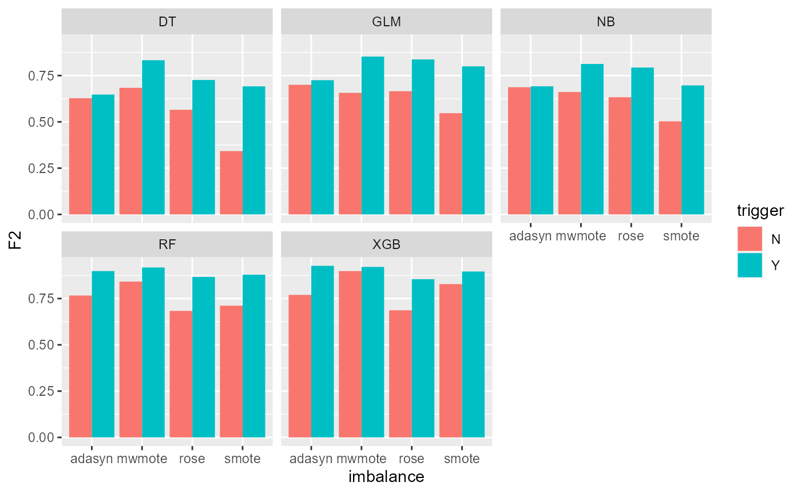

Health Insurance Fraud classification with Triggers
SSSIHLCASFraudClassifyR.RmdWhat is Health Insurance Fraud
Fraud detection is an important area of research in the healthcare systems due to its financial consequences arising mainly from investigation costs, revenue losses, and reputational risk.
Healthcare fraud can be broadly classified into three categories:
Provider fraud: Provider healthcare fraud may be committed by individuals (e.g., physicians, doctors) or by organizations (e.g., hospitals). Sometimes provider fraud may also involve other service providers or individuals (e.g., patients).
Customer fraud: Customer fraud may be committed when the insured/ consumer knowingly misrepresents the facts to get additional benefits. They may work in union with healthcare providers (e.g., doctors, physicians)
Insurer fraud: Insurer fraud may be committed when the insurance company or company’s employees work in union with other parties to reduce claim payouts to consumers
We will look into provider fraud and customer fraud as it is relatively possible to find the data on these.
Fraud classification - role of machine learning
Traditional healthcare fraud detection models are heavily dependent on auditing and expert inspection. These models are costly, inefficient, and time-consuming and require lots of human intervention. Often thousands of records are handled by very few claims handlers who are expected to review all the claims. Under such circumstances, they only focus on some special characteristics of claims and pay very little attention to the relationships between the features.
Various machine learning and deep learning models can be used in healthcare systems for efficient fraud detection. By appropriately training the algorithm to pick up patterns characteristic to fraudulent claims, machine learning models have often proven to be useful, cost-efficient ways to embed into traditional fraud classification processes.
Data Imbalance problem
Fraud classification is generally a 2-class problem statement i.e. a claim can be classified as either fraud or non-fraud. Often, in a 2-class problem the data could be distorted towards one of the classes. In a typical claims data set, one can expect the fraudulent claims to be a small percentage of the total claims. Training a machine learning model with this data set could lead us to predict non-fraud cases more accurately compared to fraud cases. However, in practice, it is generally preferred to detect fraud cases correctly rather than non-fraud cases.
There are various methods to adjust for this imbalance by either generating synthetic data points for the minority class (Over-sampling) or to reduce the majority class observations (Under-sampling)
In the package vignettes, we have illustrated how data with and without triggers can be balanced using the below techniques.
- ADASYN(Adaptive Synthetic Sampling) generates synthetic data points for the minority class in imbalanced datasets, creating more samples in underrepresented regions to improve model performance.
- SMOTE (Synthetic Minority Over-sampling Technique) generates synthetic data points for the minority class in imbalanced datasets by interpolating between minority class examples to create new samples.
- MWMOTE(Majority Weighted Minority Oversampling Technique) is a modification of SMOTE that aims to address the issue of noisy examples by adding a weighting factor to each minority class example based on its level of noise.
- ROSE (Random Over-Sampling Examples) generates synthetic data points for the minority class by randomly selecting a sample from the minority class.
Using triggers to improve ML predictability
Actuarial rule-based triggers can be effectively used to identify suspicious claims. However, these can be further introduced as engineered features into machine learning models to improve the predictability.
ML models can also be used to identify triggers that are most effective at classifying fraud which can in-turn help in improving existing systems of the insurer.
Package Vignettes
We have performed model fitting on a health insurance claims data set (sample of which is included in the package). The model fitting process has been explained using the below vignettes:
Data Pre-Processing: Pre-processing claims data and adjusting it for imbalance
Mapping Triggers to Data: Adding triggers to the claims data using the package. Pre-processing this data set and adjusting it for imbalance.
-
Fraud classification using machine learning models: Machine learning models have been fit on the data sets - with and without triggers generated above.
Decision Trees (DT)
Generalized Linear Model (GLM)
Naive-Bayes (NB)
Random Forest (RF)
XGBoost (XGB)
A consolidated visualization of results is as below.
We can see that in majority of the cases, the models with the trigger variables show better F-2 scores and perform better fraud classification.
library(dplyr)
library(ggplot2)
results %>%
ggplot()+
geom_bar(
aes(
x = imbalance,
y = F2,
fill = trigger
),
position = "dodge",
stat = "identity"
)+
facet_wrap(~method)